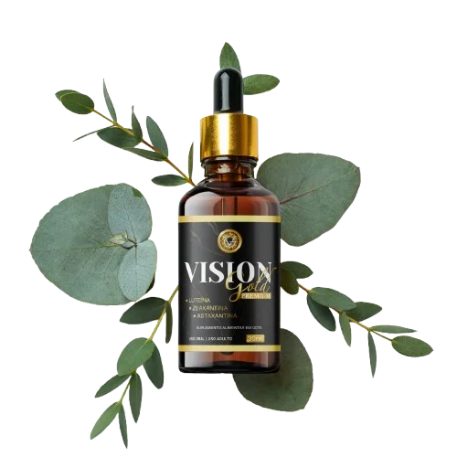

üëÅÔ∏è Suplemento natural para cuidado da visão

üì≤ Fale com um especialista
Vision Gold é um suplemento alimentar com ingredientes selecionados que podem auxiliar na manutenção da saúde ocular de forma natural.

- Auxilia na rotina de cuidados com os olhos
- Ingredientes naturais que apoiam o bem-estar ocular
- Contribui para a saúde visual no dia a dia
- Parte de uma alimentação equilibrada
üí¨ Quero saber mais sobre Vision Gold

Uma abordagem natural para apoiar os cuidados com a visão, dentro de uma rotina saudável.
‚úÖ Entrar em contato com o especialista

üîí Envio seguro e discreto.
üíä Produto certificado e natural.